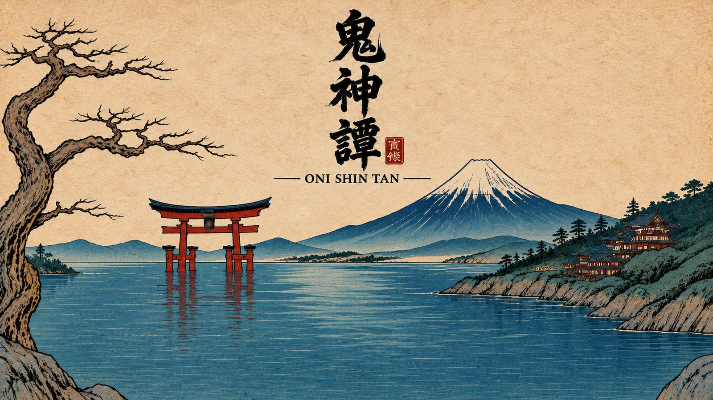
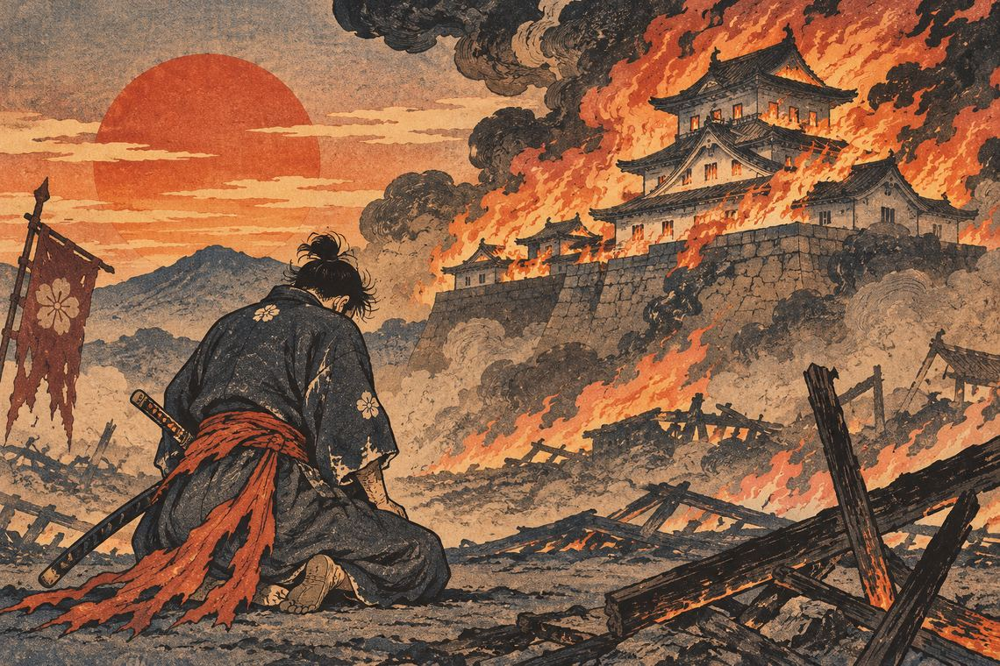
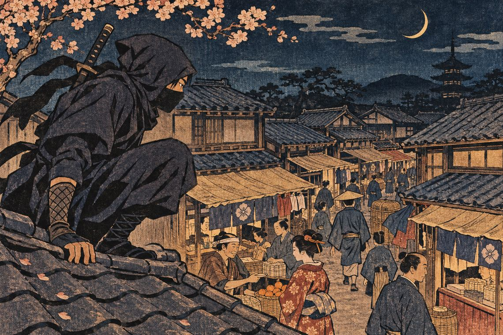
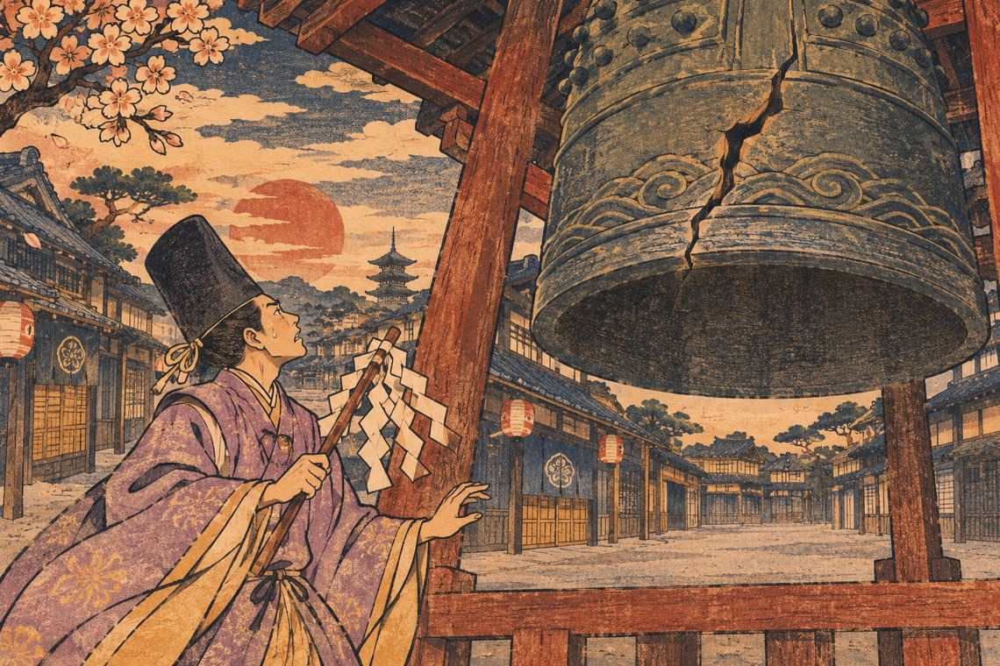
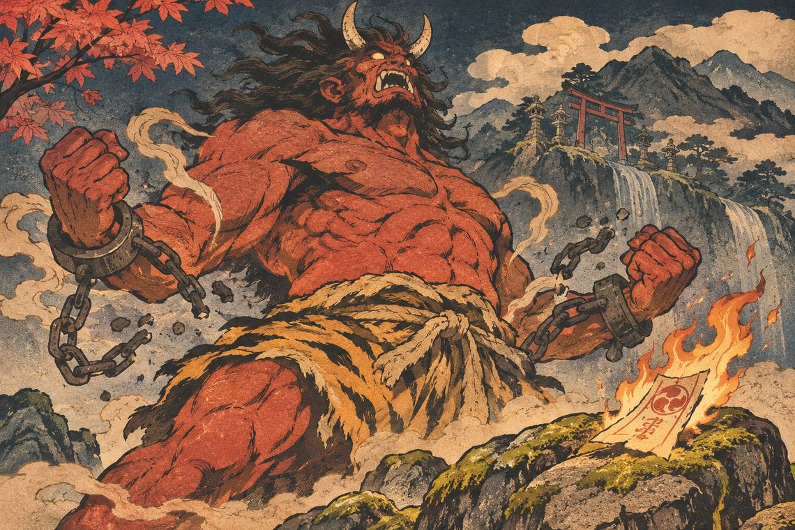
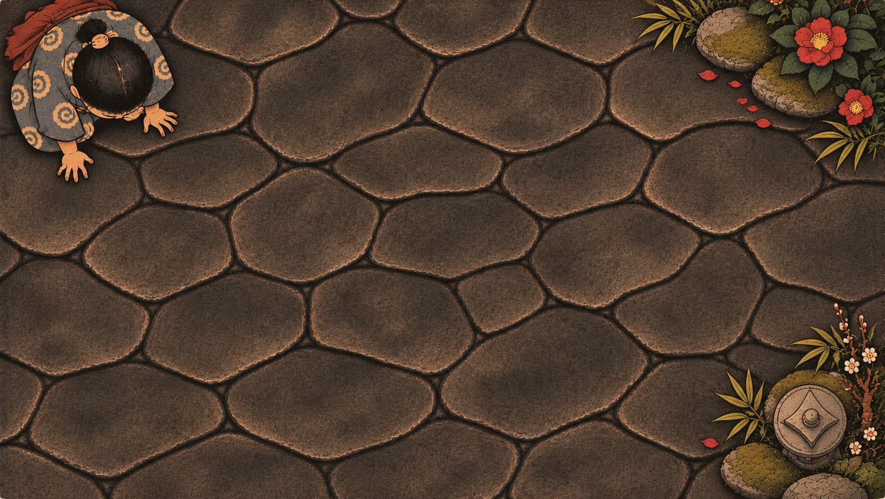
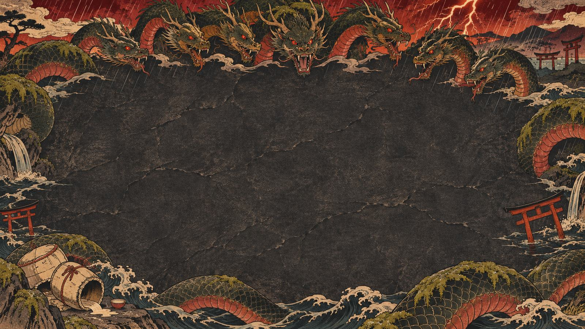
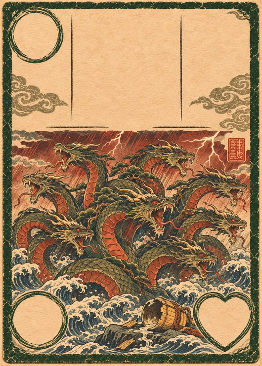
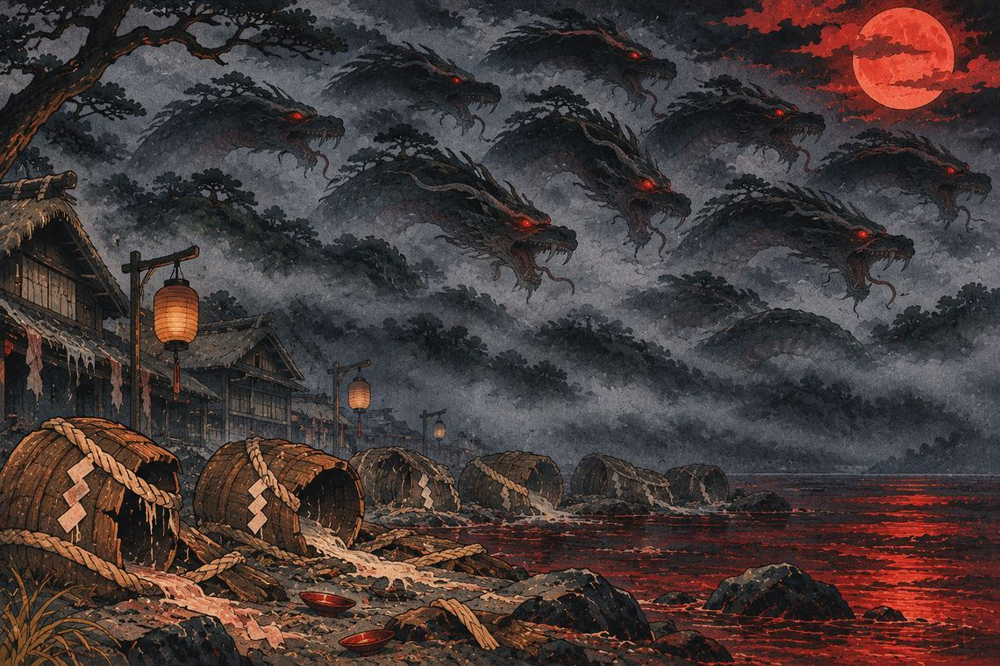

Oni Shin Tan 鬼神譚
A card game of demons and gods, set in Edo-period Japan. Four heroes, 122 cards, a vow to keep, and an eight-headed dragon at the bottom of the world.
Java 17 and JavaFX 21 · Epitech T-JAV-501 · Pierre and Kayne
Scroll to begin the tale, or open the seal for the contents
In old Edo, tales of oni and kami were told by lamplight. We turned them into a game, where every card is a tale and every match a legend told twice. Pick a path. Swear an oath. Go down.
Four paths, twelve heroes





122 cards, from rice farmers to Amaterasu
Swear an oath before the first card
In a duel, both players choose a vow from their class. Each turn kept adds a stack, and at 3, 6 and 9 stacks the gods add a reward. Break it, and you pay a penalty and become an Oathbreaker until you swear again. Each player also has a chess clock: seven minutes, red and ticking under thirty seconds.
The Uragiri 裏切り cards only work for an Oathbreaker. AI-against-AI simulations show that breaking your vow on purpose never pays.
Godai 五大, the power of Takeda Shingen
Play Takeda Shingen and your hero becomes him. Once per turn, for 2 Ki, a gorintō rises from the board and you pick one of its five stones.
Straight from the game
Recorded from a real Adventure battle: Shuten-dōji against the Ninja of the town.
The Adventure: three battles per path
Each class has its own story, told in ukiyo-e between the battles. Win a battle and pick an upgrade for the next one. In Shura no Michi 修羅の道 the hard AI fights you from the start, and your wounds carry over from one battle to the next.

The final boss
八岐大蛇
Yamata no Orochi, the eight-headed serpent
The final boss wakes once all four Adventures are done, in normal and in Shura no Michi. He starts with twelve cards in hand, and his hero power Yatsu-kubi 八つ首 strikes eight times at random, harder as he bleeds.

Under the board, an engine that never draws
The rules engine never imports JavaFX. The interface and the AI both play through one façade, GameEngine, and they listen to the events it publishes. Each card effect is registered by its id, so a new card is one line of JSON and one entry in the registry.

You reached Yomi. Orochi is waiting.
Pick your system: Java is bundled, nothing else to install.
- Unzip the folder.
- Windows: run OniShinTan\OniShinTan.exe · macOS: open OniShinTan.app · Linux: run OniShinTan/bin/OniShinTan
Windows SmartScreen: More info → Run anyway. macOS: right-click the app → Open (or run xattr -cr OniShinTan.app) the first time.